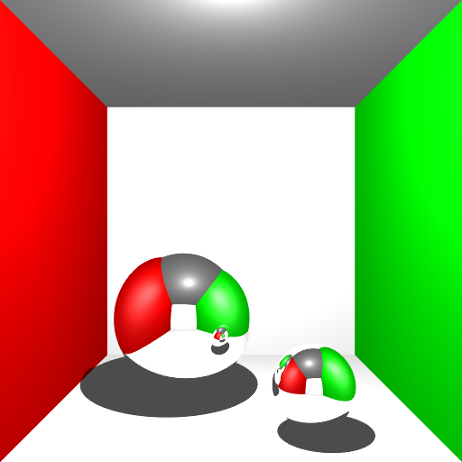
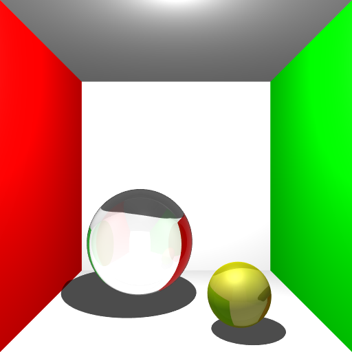
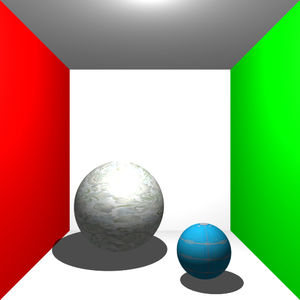
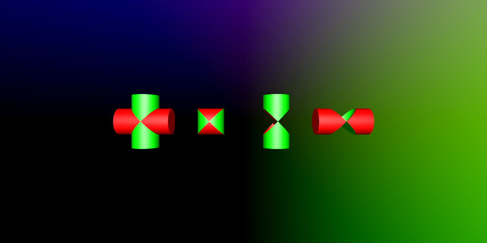
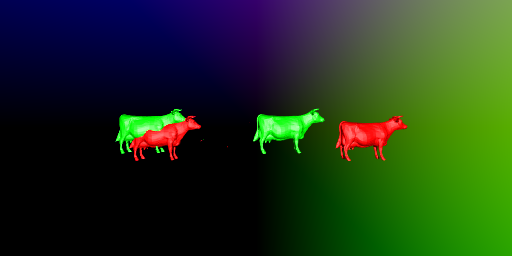
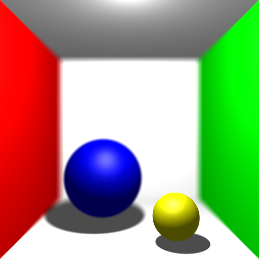
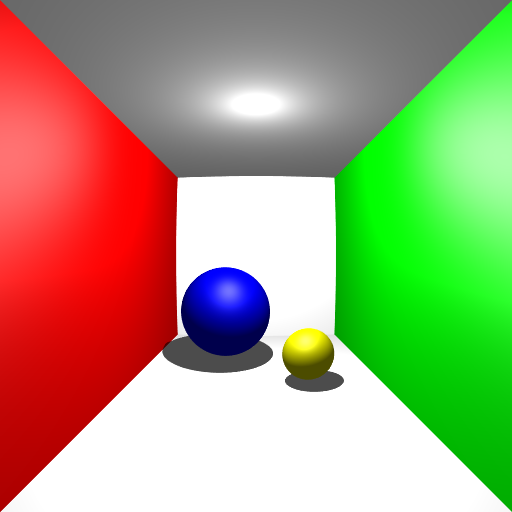
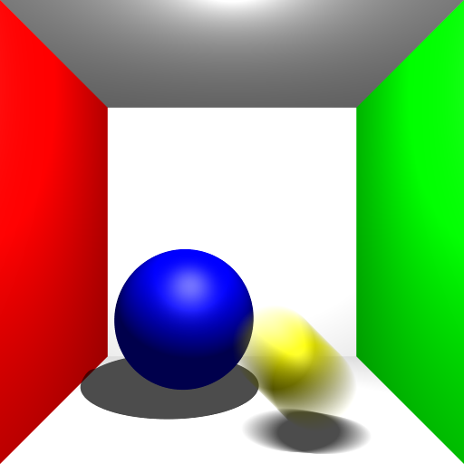
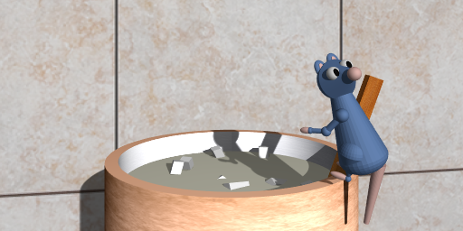

Remy was a ray-tracer that I built for my CS 488 Introduction to Computer Graphics final project in Fall 2019. I decided to add onto my Assignment 4 raytracer, which was already capable of basic raytracing with meshes and primitives like spheres, cubes, cones, cylinders, and tori.
-
Reflection
Reflection was fairly simple to add. I added a second type of material and calculated the reflected ray based on the law of reflection.
 -
Refraction
Refraction can be calculated at the same time as reflection. Each material was given an index of refraction and the new rays were calculated based on Fresnel's equations.
 -
Anti-aliasing
I implemented stochastic anti-aliasing by sending out more rays per pixel, and then calculating pixel colour based on the average of the samples. Sample rays were generated using the halton sequence. The left image was generated without anti-aliasing, and the right was generated with anti-aliasing.
-
Texture Mapping
Texture mapping was implemented by projecting a 2d image onto 3d models. It was implemented for all primitives.
 -
Constructive Solid Geometry
Constructive Solid Geometry is a more advanced version of regular hierarchical modelling where boolean nodes are added, so that objects can be subtracted from each other. Implementing this was surprisingly difficult, as it required a complete code re-factor.
-
Soft Shadows
Used stochastic sampling with area lights to generate more diffuse shadows.
-
Depth of Field
Depth of Field was achieved by implmenting an aperture. The origins of the rays were calculated by scattering their origins withing a radius and focusing them on a single point (the focal point).
 -
Fisheye Lens
This was implemented by casting rays in a circle rather than a rectangle.
 -
Motion Blur
A rudimentary frame animation system was implemented. A movement was defined within a specified timeframe, and the object was incrementally moved frame by frame. The final result is the average across all the frames.
 -
Final Image
This was the final image that I generated to showcase everything that I had impelemented. It was supposed to imitate a scene from the movie Ratatouille, using the Remy model I had generated previously for Assignment 3.
